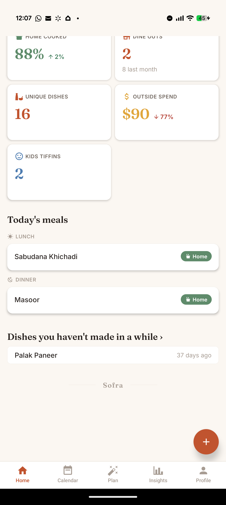
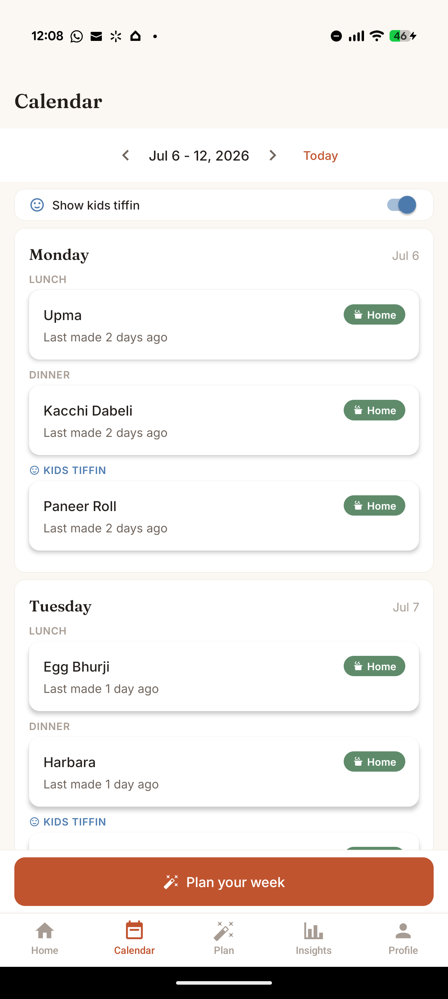
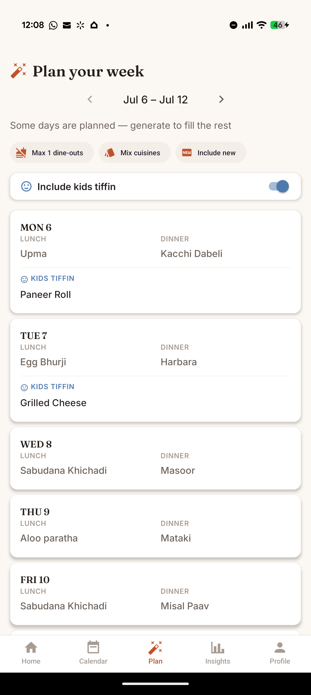
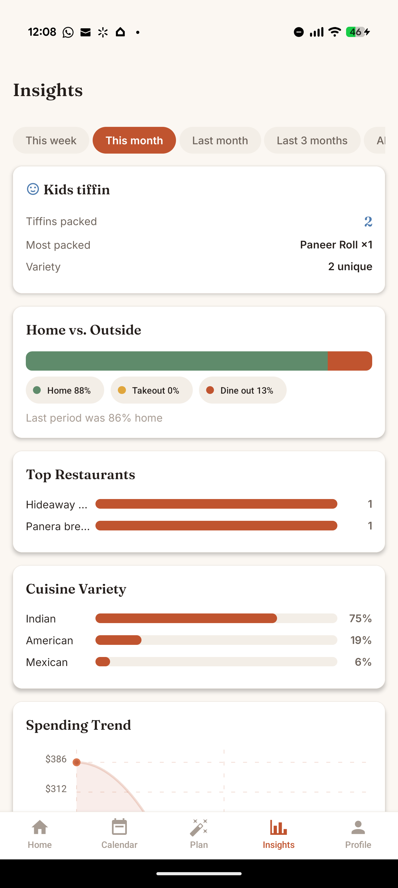

A walk through every screen, from your first sign-in to your profile — and the simple daily habit that makes it all work.
Open Sofra and sign in with Google, or create an account with your email. It takes about five seconds — no lengthy onboarding.
A household is your family's shared space — everyone in it sees the same meals, plans, and insights. Create a new one (name it, e.g. "The Rajwades") and you become the admin, or join an existing household with the invite code a family member shares.
In Profile → Meal preferences, choose which meals you plan — lunch and dinner by default; add breakfast or snack if you like. This shapes what "Today's meals" shows.

Your kitchen at a glance, the moment you open the app.

Your family's meal history and plan, week by week.

The magic: an auto-generated week built from your own cooking history.

Honest patterns about how your family eats and spends.
Choose the source (home, takeout, dine-out) and who it's for (family or kids tiffin). For home meals, add the main dish plus sides for a full thali. For dine-outs, list the dishes you ordered and rate each with stars — Sofra remembers what to order (and what to skip) next time. Cuisine, cost, and notes are optional.
Every dish your family has ever made, searchable and filterable by cuisine, favourites, or "not made in 30+ days". Star your favourites; tap a dish to see how often and how recently you've cooked it.
Everywhere you've dined out or ordered from — visits, spend, and last visit. Tap a place to see the dishes you've ordered there with your star ratings. Switch to All for a compact, scannable list even with hundreds of restaurants.
Your identity, household name and invite code, and family members. Settings holds appearance (auto / light / dark), reminders (daily / weekly / monthly), and account controls. Meal preferences and auto-plan rules live in Profile.
Log your meals as you go — it takes seconds. Within a week or two, your dashboard, insights, and auto-plans come alive. That's the whole trick: Sofra is only as smart as the memory you give it, and giving it that memory is nearly effortless.
See all features